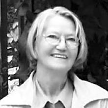

Eleanor Rose
Born: Oct 12, 1934
Date of Passing: June 22, 2007
With broken hearts we are sad to announce the sudden passing of Eleanor Rose Thompson on June 22, 2007.
She was predeceased by husband, Norman Jonatchick; parents, Helgi and Hlif Thompson and brothers, Clifford and Stanley Thompson.
Left to cherish her memory are her sons, Larry Jonatschick, Damian Stiles (Kathy), Glen Jonatchick, Ed Jonatchick (April); daughter, Wanda Styles (Di) and grandchildren, Jewels-Deville Stiles, Troy Stiles and Jesse Styles.
She is also survived by her sisters, Margaret Tomasson, Eileen Nesbitt, Betty (Lou) Berthelet, May (Roger) Ryplanski, Linda Hoffstrom, Sylvia (Clint) Smith; brothers, Harold Thompson, Allan (Louise) Thompson and Robert Thompson; sister-in-law, Vera Thompson; many nephews and nieces.
Eleanor Thompson was born in Big Point, Manitoba on October 12, 1934, the fifth child of Helgi and Hlif Thompson.
She attended Big Point School until the family moved to Langruth, Manitoba in 1943 where she completed her high school education. During these years Eleanor was very active in sports including baseball, track and field, and hockey. After high school, Eleanor moved to Winnipeg where she worked at Salisbury House and later attended Success College.
It was in Winnipeg that she met Norman Jonatchick and after a several year courtship they were married on September 15, 1956. Eleanor was always devoted to her family and friends; her home became the place to stay while in Winnipeg. While Eleanor worked at numerous jobs throughout her life, she was a devoted mother and her main focus was raising their four children, Larry, Glen, Edward, and Wanda, who were a source of pride for her. Her three grandchildren Jewels, Troy, and Jesse were the joy of her life. She was very much looking forward to her fourth grandchild, due to arrive any day.
Eleanor was a very kind and thoughtful person who will be dearly missed by those who knew and loved her.
Following cremation, a memorial service will be held at 1:00 p.m. on Thursday, June 28, 2007, at the First Lutheran Church, 580 Victor Street, with the Rev. Ingthor Isfeld officiating. Bardal Funeral Home 843 Sherbrook Street, 774-7474 Condolences: www.bardal.ca
source